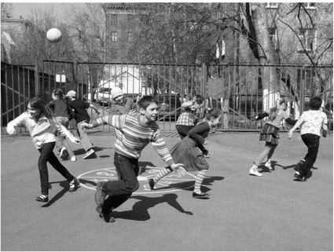

Прыгаем на одной ноге на 1, потом 2, потом сразу двумя ногами на 3-4, одной на 5, двумя на 6-7, одной на 8, двумя на 9-10, поворачиваемся на 180%, при этом оказываясь вновь двумя ногами на 9-10, и обратно тем же ходом. Дальше кидаем на 2 квадрат (это — "второй класс") и снова прыгаем сначала.

Как называется игра, где нужно попасть мячиком по игроку?
Детская игра, заключающаяся в прыжках через узкую двойную верёвку или резинку, натянутую на различной высоте.
Манчкин, жмурки, чехарда, бабки. Какая из игр не относится к уличным?
Какая игра несёт названия овоща?
Вариация игры, в которой все прячутся, а один человек ищет (созвучна с названием одного из районов Минска)
